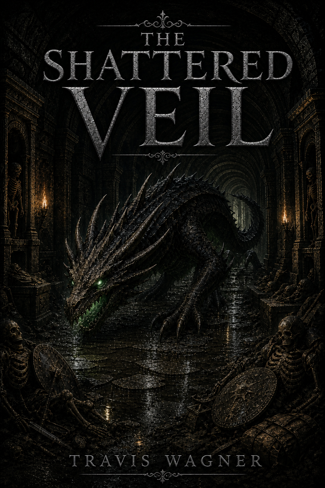

Story Hook
The Shattered Veil brings the series underground. The catacombs are not ruins; they are a lock. The dragon is not simply a monster; it is what the lock was built to contain.

Volume III
The barrier breaks where the oldest bones are buried.
Below the ruined cities, a deep dragon crawls through catacombs lined with the remains of adventurers who went looking for glory and found the machinery of the Veil instead.
The Shattered Veil brings the series underground. The catacombs are not ruins; they are a lock. The dragon is not simply a monster; it is what the lock was built to contain.
Adventurer skeletons, broken shields, green-lit fissures, ancient dragon speech, buried machinery, and the first full explanation of why the Veil was made to fail.
Position this volume for readers who want the biggest monster set piece yet, answers to the series mystery, and a darker dungeon-crawl tone with high fantasy consequences.
No verified award claim should be published yet. A future authentic note could feature a convention selection, indie fantasy shortlist, or reader-choice mention once confirmed.
Draft note: story details on this page are promotional filler for review and should be approved by Travis before public launch.